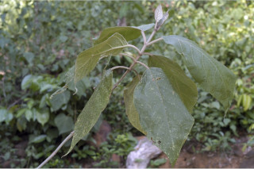

Images :



| Habit : | Large shrubs or small trees ca. 5 m tall. |
| Leaves : | Leaves simple , opposite , decussate ; petiole 2.5-7.5 cm long, terete , densely white stellate tomentose ; lamina 10.5-25 x 5.5-15 cm, elliptic to broadly elliptic or ovate , apex acute or acuminate , base acute , thinly coriaceous , glaucous , densely white stellate tomentose beneath; secondary_nerves and reticulation impressed above; midrib raised above; secondary_nerves 6-9 pairs; tertiary_nerves distantly obliquely percurrent . |
| Inflorescence / Flower : | N/A |
| Fruit and Seed : | N/A |